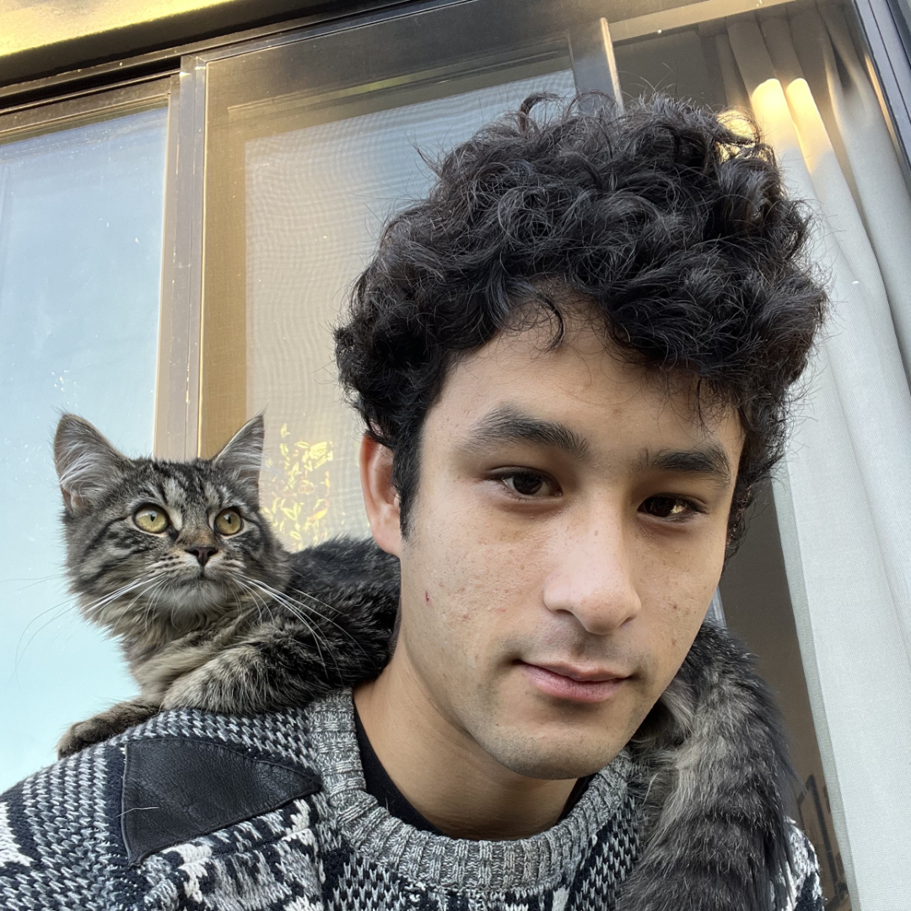

evan kahn
multidisciplinary by necessity

est. 1995
interaction architect at
looking glass
subpages
projects
research and employment
writing
info
résumé
contact
email: contact (at) eka (dot) hn
hackaday
linkedin
github
facebook
twitter
work I am particularly proud of
How A Thermostat Works
, a technical Dr. Seuss-style poem.
MuddHacks 2016
, which I organized.
Video featured in the LA Times.
yapg
(Yet Another Pixel Globe).
Featured on Hackaday
and
Linux User & Developer, print issue 162
.
Triple-driver custom in-ear monitors:
Photo 1
Photo 2
CGoL
. Designed and fabricated a CMOS chip to play Conway's Game of Life.
STIRRINGS WITHIN THE MACHINE
, my seven-page constrained novella for Lit 35 (Fiction Writing Seminar).
some things i like
cave story
achewood
braid
mother 3
fantastic mr. fox
rango
don hertzfeldt
modest mouse
the mouse and his child
watchmen
arrested development
over the garden wall